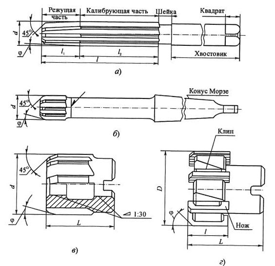
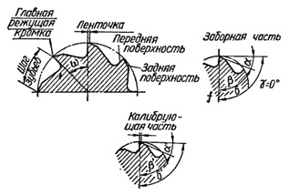

Цилиндрическая развертка состоит из рабочей части, шейки и хвостовика. Назначение шейки и хвостовика у разверток такое же как у сверл и зенкеров.
Рабочая часть цилиндрических разверток состоит из режущей и калибрующей частей. На левом торце развертки снимается фаска под углом φ = 45°, которая облегчает вхождение инструмента в отверстие и предохраняет режущие кромки от повреждения. Далее следует заборный конус с углом в плане φ, зубья на котором снимают припуск, заданный на обработку. Фаска и заборный конус составляют режущую часть развертки. Для улучшения условий работы развертки при врезании наименьший диаметр заборного конуса берется несколько меньше диаметра отверстия под развертывание.
Калибрующая часть развертки примерно до половины ее длины l2 цилиндрическая. На остальной части она затачивается с небольшой обратной конусностью, т.е. с уменьшением диаметра по направлению к хвостовику развертки. У ручных разверток величина обратной конусности на 100 мм длины равна 0,01...0,05 мм, у машинных разверток при жестком креплении инструмента - 0,04...0,06 мм; при плавающем креплении в патроне - 0,08...0,015 мм. Обратная конусность необходима для уменьшения разбивки отверстия при выходе из него развертки. Так как ее величина мала, то при небольшой длине калибрующей части обратную конусность иногда делают сразу за заборным конусом, не оставляя цилиндрического участка. Общая длина рабочей части разверток: у ручных разверток l = (4...10)d, у машинных l = (0,75...2,0)d.
Передний угол у разверток обычно принимается равным нулю, поскольку развертка работает в зоне малых толщин срезаемого слоя, характер протекания процесса резания зависит главным образом не от переднего угла, а от радиуса закругления режущей кромки. На черновых развертках и при обработке вязких материалов передний угол равен 5—10°. Задние углы у разверток колеблются в пределах 4—8°.
Задний угол, равный α = 5... 12°, получают заточкой задних поверхностей развертки по плоскости, причем в отличие от других видов инструментов меньшее значение этого угла рекомендуется брать при чистовой обработке, а большее - при черновой.
Зубья на заборном конусе затачивают остро, а на калибрующей части у них оставляют узкие цилиндрические направляющие ленточки шириной 0,08...0,40 мм для d = 3...50 мм. Их тщательно доводят, благодаря чему обеспечивается выглаживание микронеровностей обработанной поверхности и предотвращается налипание мелкой стружки, ухудшающей шероховатость поверхности отверстий и снижающей стойкость разверток.
Допуски на диаметр развертки в связи с тем, что развертки являются чистовым инструментом, обеспечивающим высокую точность по диаметру (JT8...JT6), должны быть очень малыми, примерно в 3 раза меньшими, чем допуски на обрабатываемое отверстие.
Таким образом, необходимо установить верхнее и нижнее отклонения для новой развертки и нижнее - для изношенной развертки. При этом нужно учитывать возможность появления максимальной и минимальной разбивки отверстия, которая может быть положительной или отрицательной.
Отрицательная разбивка проявляется в уменьшении диаметра отверстия после вывода развертки. Она встречается реже и имеет место при обработке тонкостенных заготовок развертывании отверстий в цветных: металлах вследствие упругих деформаций поверхностей отверстий, а также при работе твердосплавных разверток по закаленным сталям из-за высокой температуры резания и термических деформаций детали.
При положительной разбивке (а) допустимое верхнее отклонение допуска на развертку BO = δ A - P
P max ≈ δ p = ( 1 / 3 ) δА, а запас на износ δИ ≈ ( 0,45 ... 0,60 ) · δ A (здесь δ A берется для отверстий по JT5...JT8).